Проходные изоляторы ППЦ, ИППУ
Полимерные проходные изоляторы на 10, 20 и 35 кВ (630–4000 А) и линейные вводы 110 кВ. Для ввода и изоляции токоведущих частей закрытых распределительных устройств электрических станций и подстанций. Позиций: 19.
Проходные изоляторы и вводы
Название модели — ссылка на характеристики и чертёж. Показаны фарфоровые изоляторы, которые заменяют полимерные, и варианты обозначения полимерных аналогов.
| Модель | Напряжение | Ток | Фарфоровый аналог (варианты обозначения) | Варианты обозначения полимерного аналога | Чертёж |
|---|---|---|---|---|---|
| ППЦ-10/630-8 УХЛ1 овальный фланец | 10 кВ | 630 А | ИПУ-10/630-7,5-02 УХЛ1, ИПУ10/630-7,5 УХЛ1, ИПУ-10/630-I-7,5 УХЛ1, ИПУ-10/630-7.5 УХЛ1, ИПУ-10/630-7.5 УХЛ2, ИП-10/630-750 У1, ИП 10/630, ИП-10/1600-7,5 УХЛ, Т2, ІПУ-10/630-7,5 М УХЛ1 | ИПК 10/630-IV/II-А УХЛ1, ИПК 10/630-IV/II-АМ УХЛ1, ИПК 10/630-IV/II-Б УХЛ1, ИПК 10/630-IV/II-БМ УХЛ1, ИППУ-10/630-8 УХЛ1, ИППУ-10/630-8-01 УХЛ1 | 80.pdf |
| ППЦ-10/630-8 УХЛ1 исполнение 01, квадратный фланец | 10 кВ | 630 А | ИПУ-10/630-7,5-02 УХЛ1, ИПУ10/630-7,5 УХЛ1, ИПУ-10/630-I-7,5 УХЛ1, ИПУ-10/630-7.5 УХЛ1, ИПУ-10/630-7.5 УХЛ2, ИП-10/630-750 У1, ИП 10/630, ИП-10/1600-7,5 УХЛ, Т2 ІПУ-10/630-7,5 М УХЛ1 | ИПК 10/630-IV/II-А УХЛ1, ИПК 10/630-IV/II-АМ УХЛ1, ИПК 10/630-IV/II-Б УХЛ1, ИПК 10/630-IV/II-БМ УХЛ1, ИППУ-10/630-8 УХЛ1, ИППУ-10/630-8-01 УХЛ1 | 80.pdf |
| ППЦ-10/630-12,5 УХЛ1 | 10 кВ | 630 А | ИПУ-10/630-12,5 УХЛ1, ИПУ-10/630-125 УХЛ1, ИПУ-10/630-12,5 УХЛ 1, ИПУ10/630-12,5 УХЛ1, ИПУ10/630-12,50 УХЛ1 ИП 10/630 | ИПК 10/1000-IV/II-А УХЛ1, ИПК 10/1000-IV/II-АМ УХЛ1, ИПК 10/1000-IV/II-Б УХЛ1, ИПК 10/1000-IV/II-БМ УХЛ1, ИППУ-10/630-12,5 УХЛ1, ИППУ-10/12,5-12,5-01 УХЛ1 | 81.pdf |
| ППЦ-10/1000-8 УХЛ1 | 10 кВ | 1000 А | ИПУ-10/1000-7,5 УХЛ1, ИПУ10/1000-7,5-02 УХЛ1, ИПУ-10/1000-7,5 УХЛ1, ИПУ10/1000-7,5-02УХЛ1, ПН-10-1000-750 У1, ПНУ-10-1000-750 У1, ИП-10/1000-7,5 У3, ИП 10/1000-7,5 УХЛ, Т2 | ИПК 10/1000-IV/II-А УХЛ1, ИПК 10/1000-IV/II-АМ УХЛ1, ИПК 10/1000-IV/II-Б УХЛ1, ИПК 10/1000-IV/II-БМ УХЛ1, ИППУ-10/1000-8 УХЛ1, ИППУ-10/1000-8-01 УХЛ1 | — |
| ППЦ-10/1000-12,5 УХЛ1 | 10 кВ | 1000 А | ИП-10/1000-12,5 У3, ИПУ-10/1000-12,50 УХЛ1, ИПУ-10/1000-1250 УХЛ1, ИПУ-10/1000-12,5 УХЛ 1, ИПУ10/1000-12,5 УХЛ1, ИПУ10/1000-12,50 УХЛ1, ИПУ-10/1000-12,5 УХЛ1 | ИППУ-10/1000-12,5 УХЛ1, ИППУ-10/1000-12,5-01 УХЛ1 | 82.pdf |
| ППЦ-10/2000-12,5 УХЛ1 | 10 кВ | 2000 А | ИПУ-10/2000-12,5 УХЛ 1, ИПУ-10/2000-12,50 УХЛ1, ИПУ-10/2000-1250 УХЛ1, ИПУ-10/2000-1250 УХЛ 1, ИП-10/2000-12,5 УХЛ1, ИПУ10/2000-12,5 УХЛ1, ИПУ10/2000-12,5УХЛ1 ПН-10-2000-1250 У1, ПНУ-10-2000-12,5 У1, ИП-10/2000-1250 У1, ПНБ-10/2000-1250 У1 | ИПК 10/2000-IV/IV УХЛ1, ИПК 10/2000-IV/IV-М УХЛ1, ИПК 10/2000-IV/IV УХЛ1, ИППУ-10/2000-12,5 УХЛ1, ИППУ-10/2000-12,5 УХЛ1 | 83.pdf |
| ППЦ-10/3150-12,5-01 УХЛ1 | 10 кВ | 3150 А | ИПУ-10/3150-12,5 УХЛ1, ИПУ-10/3150-12.5 УХЛ1, ИПУ10/3150-12,5 УХЛ1, ИПУ10/3150-12,5УХЛ1 ПНБ-10/3150-1250 У1, ПНУ-10-3150-12 У1, ИП-10/3150-1250 У1 | ИПК 10/3150-IV/IV УХЛ1, ИПК 10/3150-IV/IV УХЛ1, ИПК 10/3150-IV/IV УХЛ1, ИПК 10/3150-IV/IV-М УХЛ1, ИПК 10/3150-IV/IV-М УХЛ1, ИППУ-10/2000-12,5 УХЛ1, ИППУ-10/2000-12,5 УХЛ1 | PPC-10-3150-12,5.pdf |
| ИППУ-10/4000-30-А4 УХЛ1 | 10 кВ | 4000 А | ИПУ-10/4000-30 УХЛ1, ИПУ-10/4000-30 УХЛ1, ИПУ10/4000-12,5 УХЛ1, ИПУ10/4000-30УХЛ1 ПНБ-10/4000-30000 У1, ПНУ-10-4000-12 У1, ИП-10/4000-1250 У1 | ППЦ-10/4000-30 УХЛ1, ИПК-10/4000-30-А4 УХЛ 1 ИПК 10/4000-IV/IV УХЛ1 ИПК 10/4000-IV/IV-М УХЛ1 | IPPU-10-4000-30.pdf |
| ППЦ-10/4000-30 УХЛ1 | 10 кВ | 4000 А | — | ИПК 10/4000-IV/IV УХЛ1 ИПК 10/4000-IV/IV-М УХЛ1, ИПК 10/4000-IV/IV-М УХЛ1 ИППУ-10/4000-30 УХЛ1, ИППУ-10/4000-30-01 УХЛ1, ИППУ-10/4000-30-А4 УХЛ1 | PPC-10-4000-30.pdf |
| ППЦ-20/630-12,5 | 20 кВ | 630 А | — | — | — |
| ППЦ-20/2000-12,5 УХЛ1 | 20 кВ | 2000 А | ИП-20/2000-12,5 УХЛ1, ИП-20/2000-12.5 УХЛ1, ИП20/2000-12,5УХЛ1, ПН-20-2000-1250 У1, ПН-20-2000-12,5 У1, ИП-20/2000-1250 У1 | ИППУ-20/2000-12,5 УХЛ1 | — |
| ИППУ-20/3150-12,5 УХЛ1 | 20 кВ | 3150 А | ИП-20/3150-12.5 УХЛ1, ПН-20-3150-1250 У1, ПН-20-3150-12,5 У1, ІП-20/3150-12,5 УХЛ1, ИП20/3150-12,5УХЛ1, ИП-20/3150-12,5 УХЛ1, П-20/3150-12,5 УХЛ 1, ИП-20/3150-12,50 УХЛ 1, ІПУ-20/3150-12,5 УХЛ1, ИП20/3150-12,5 УХЛ1, ИПУ-20/3150-12,5 УХЛ1 | ІППУ-20/3150-12,5-01 УХЛ1, ППЦ-20/3150-01 УХЛ1, ИППУ-20/3150-01 УХЛ1, ИПК 20/3150-IV/IV-М УХЛ1, ИПК 20/3150-IV/IV-М УХЛ1, ИППУ-20/3150-12,5 УХЛ1, ИППУ-20/3150-12,5 УХЛ1, ИПК 20/4000-IV/IV УХЛ1, ИПК 20/4000-IV/IV УХЛ1, ИПК 20/4000-IV/IV УХЛ1, ИПК 20/4000-IV/IV-М УХЛ1, ИПК 20/4000-IV/IV-М УХЛ1, ИППУ-20/4000-12,5 УХЛ1, ИППУ-20/4000-12,5 УХЛ1 | — |
| ППЦ-20/4000-12,5 УХЛ1 | 20 кВ | 4000 А | ИП-20/3150-12.5 УХЛ1, ПН-20-3150-1250 У1, ПН-20-3150-12,5 У1, ИП-20/3150-1250 У1, ИП20/3150-12,5УХЛ1, ИП-20/3150-12,5 УХЛ1, П-20/3150-12,5 УХЛ 1, ИП-20/3150-12,50 УХЛ 1, ИП-20/3150-1250 УХЛ 1, ИП20/3150-12,5 УХЛ1, ИПУ-20/3150-12,5 УХЛ1 | ИПК 20/3150-IV/IV УХЛ1, ИПК 20/3150-IV/IV УХЛ1, ИПК 20/3150-IV/IV УХЛ1, ИПК 20/3150-IV/IV-М УХЛ1, ИПК 20/3150-IV/IV-М УХЛ1, ИППУ-20/3150-12,5 УХЛ1, ИППУ-20/3150-12,5 УХЛ1, ИПК 20/4000-IV/IV УХЛ1, ИПК 20/4000-IV/IV УХЛ1, ИПК 20/4000-IV/IV УХЛ1, ИПК 20/4000-IV/IV-М УХЛ1, ИПК 20/4000-IV/IV-М УХЛ1, ИППУ-20/4000-12,5 УХЛ1, ИППУ-20/4000-12,5 УХЛ1 | PPC-20-4000-12,5.pdf |
| ППЦ-35/630-8 УХЛ1 | 35 кВ | 630 А | ИП-35/630-7,5 УХЛ1, ИП-35/630-7,50 УХЛ1, ИП-35/630-750 УХЛ1, ИП-35/630-7,5 УХЛ 1, ИП35/630-7,5 УХЛ1, ИПУ-35/630-7,5 УХЛ1, ИП-35/400-7,5 УХЛ1, ИП-35/400-7,50 УХЛ1, ИП-35/400-750 УХЛ1, ИП-35/400-7,5 УХЛ 1, ИП35/400-7,5 УХЛ1, ИПУ-35/400-7,5 УХЛ1, ИП35/400-7,5УХЛ2, ИП-35/400-7,5 УХЛ2 | ИППУ-35/630-8 УХЛ1, ИППУ-35/630-8-01 УХЛ1, ИППУ-35/630-8-02 УХЛ1 | 84.pdf |
| ППЦ-35/1000-8 УХЛ1 | 35 кВ | 1000 А | ИП-35/1000-7,5 УХЛ1, ИП-35/1000-7,50 УХЛ1, ИП-35/1000-750 УХЛ1, ИП-35/1000-7,5 УХЛ 1, ИП35/1000-7,5 УХЛ1, ИПУ-35/1000-7,5 УХЛ1, ПН-35/1000-750 У1 | ИППУ-35/1000-8 УХЛ1 | 85.pdf |
| ППЦ-35/1600-8 УХЛ1 | 35 кВ | 1600 А | ИП-35/1600-7,50 УХЛ2, ИП-35/1600-750 УХЛ2, ИП-35/1600-7,5 УХЛ 2, ИП35/1600-7,5 УХЛ2, ИП-35/1600-7,50 УХЛ1, ИП-35/1600-750 УХЛ1, ИП-35/1600-7,5 УХЛ 1, ИП35/1600-7,5 УХЛ1, ИПУ-35/1600-7,5 УХЛ1 | ИППУ-35/1600-8 УХЛ1 | 86.pdf |
| ИППУ-35/3150-30 УХЛ1 | 35 кВ | 3150 А | ИП-35/3150-7,50 УХЛ1, ИП-35/3150-12,5 УХЛ1, ИП-35/3150-20 УХЛ1, ИП-35/3150-30 УХЛ 1, | ИППУ-35/3150-8 УХЛ1 ППЦ-35/3150-8 УХЛ1 ППЦ-35/3150-12,5 УХЛ1 | — |
| ИППУ-35/4000-30 УХЛ1 | 35 кВ | 4000 А | ИП-35/4000-7,50 УХЛ1, ИП-35/4000-12,5 УХЛ1, ИП-35/4000-20 УХЛ1, ИП-35/4000-30 УХЛ 1 | ИППУ-35/4000-8 УХЛ1 ППЦ-35/4000-8 УХЛ1 ППЦ-35/4000-12,5 УХЛ1 | — |
| Линейные вводы 110 кВ воздух-воздух, FCRGW-110-800-2000 | 110 кВ | 800-2000 А | Ввод 110 кВ, Линейный ввод 110 кВ, Ввод 110 кВ воздух-воздух, Сухой ввод 110 кВ | — | — |
Присоединительные размеры могут изменяться по требованию заказчика. Если нужной модели нет в списке, свяжитесь с нами — подберём изолятор.
Технические характеристики
Раскройте нужную модель, чтобы увидеть параметры.
ППЦ-10/630-8 УХЛ110 кВ, 630 А, овальный фланец
Изолятор проходной полимерный ППЦ-10/630-8 УХЛ1 (овальный фланец), аналог керамического изолятора ИПУ-10/630-7,5 УХЛ1, ИПУ 10/630-7,5-I УХЛ1, предназначен для ввода и изоляции токоведущих частей закрытых распределительных устройств электрических станций и подстанций (ТП), комплектных распределительных устройств (КТП), соединения с открытыми распределительными устройствами или линиями электропередачи на переменное напряжение 10 кВ частоты до 100 Гц, для работы в атмосфере типов I или II по ГОСТ 15150-69, а также для закрытых токопроводов.
Изолятор ППЦ 10/630-8 УХЛ1 применяется для ремонта и комплектации трансформаторных подстанций КТП мощностью до 100, 160, 200, 300, 400, 630 кВа.
Варианты обозначения полимерных аналогов: ИПК 10 630-IV II-А УХЛ1, ИПК 10 630-IV II-АМ УХЛ1, ИПК 10 630-IV II-Б УХЛ1, ИПК 10 630-IV II-БМ УХЛ1, ИППУ-10 630-8 УХЛ1, ИППУ-10 630-8-01 УХЛ1
Заменяют фарфоровый проходной изолятор: ИПУ-10 630-7,5-02 УХЛ1, ИПУ10 630-7,5 УХЛ1, ИПУ-10 630-I-7,5 УХЛ1, ИПУ-10 630-7.5 УХЛ1, ИПУ-10 630-7.5 УХЛ2, ИП-10 630-750 У1, ИП 10 630, ИП-10 1600-7,5 УХЛ, Т2, ІПУ-10 630-7,5 М УХЛ1, ИПУ-10 630-7,5М УХЛ1, ИПУ-10 630-7,5 I УХЛ1
| Показатель | Ед. изм. | ППЦ-10/630-8 УХЛ1 |
|---|---|---|
| Номинальное напряжение | кВ | 10 |
| Номинальный ток | А | 630 |
| Нормированная разрушающая механическая сила при изгибе, не менее | кН | 8 |
| Выдерживаемое напряжение грозового импульса «1,2/50» | кВ | 80 |
| Выдерживаемое напряжение промышленной частоты в сухом состоянии | кВ | 45 |
| Выдерживаемое напряжение промышленной частоты под дождём | кВ | 30 |
| Выдерживаемое напряжение промышленной частоты в загрязнённом и увлажнённом состоянии при удельной поверхностной проводимости загрязнённого слоя (35±1,0) мкСм, не менее | кВ | 12 |
| Длина пути утечки внешней изоляции, не менее | мм | 380 |
| Длина пути утечки внутренней изоляции, не менее | мм | 290 |
| Масса, не более | кг | 4,2 |

ППЦ-10/630-8 УХЛ110 кВ, 630 А, исполнение 01, квадратный фланец
Изолятор проходной ППЦ-10/630-8 УХЛ1 исполнение 01 (квадратный фланец), аналог керамического изолятора ИПУ-10/630-7,5-02 УХЛ1, ИПУ 10/630-7,5-II УХЛ1, предназначен для ввода и изоляции токоведущих частей закрытых распределительных устройств электрических станций и подстанций (ТП), комплектных распределительных устройств (КТП), соединения с открытыми распределительными устройствами или линиями электропередачи на переменное напряжение 10 кВ частоты до 100 Гц, для работы в атмосфере типов I или II по ГОСТ 15150-69, а также для закрытых токопроводов.
Изолятор ППЦ 10/630-8 УХЛ1 исполнение 01 применяется для ремонта и комплектации трансформаторных подстанций КТП мощностью до 100, 160, 200, 300, 400, 630 кВа.
Варианты обозначения полимерных аналогов: ИПК 10 630-IV II-Б УХЛ1, ИПК 10 630-IV II-БМ УХЛ1, ИППУ-10 630-8-02 УХЛ1
Заменяют фарфоровый проходной изолятор: ИПУ-10 630-7,5-02 УХЛ1, ИПУ10 630-7,5 02 УХЛ1, ИПУ-10 630-II-7,5 УХЛ1
| Показатель | Ед. изм. | ППЦ-10/630-8 УХЛ1 |
|---|---|---|
| Номинальное напряжение | кВ | 10 |
| Номинальный ток | А | 630 |
| Нормированная разрушающая механическая сила при изгибе, не менее | кН | 8 |
| Выдерживаемое напряжение грозового импульса «1,2/50» | кВ | 80 |
| Выдерживаемое напряжение промышленной частоты в сухом состоянии | кВ | 45 |
| Выдерживаемое напряжение промышленной частоты под дождём | кВ | 30 |
| Выдерживаемое напряжение промышленной частоты в загрязнённом и увлажнённом состоянии при удельной поверхностной проводимости загрязнённого слоя (35±1,0) мкСм, не менее | кВ | 12 |
| Длина пути утечки внешней изоляции, не менее | мм | 380 |
| Длина пути утечки внутренней изоляции, не менее | мм | 290 |
| Масса, не более | кг | 4,2 |
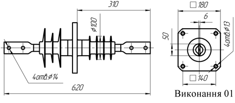
ППЦ-10/1000-8 УХЛ110 кВ, 1000 А
Изолятор проходной полимерный ППЦ-10/1000-8 УХЛ1, ППЦ-10/1000-8 УХЛ1 исполение 01, аналог керамического изолятора ИПУ-10/1000-7,5 УХЛ1, ИПУ 10/1000-7,5-02 УХЛ1, предназначен для ввода и изоляции токоведущих частей закрытых распределительных устройств электрических станций и подстанций (ТП), комплектных распределительных устройств (КТП), соединения с открытыми распределительными устройствами или линиями электропередачи на переменное напряжение 10 кВ частоты до 100 Гц, для работы в атмосфере типов I или II по ГОСТ 15150-69, а также для закрытых токопроводов.
Изолятор ППЦ-10/1000-8 УХЛ1, ППЦ-10/1000-8 УХЛ1 исполение 01 применяется для ремонта и комплектации трансформаторных подстанций КТП 1000 кВа.
Варианты обозначения полимерных аналогов: ИПК 10 1000-IV II-А УХЛ1, ИПК 10 1000-IV II-АМ УХЛ1, ИПК 10 1000-IV II-Б УХЛ1, ИПК 10 1000-IV II-БМ УХЛ1, ИППУ-10 1000-8 УХЛ1, ИППУ-10 1000-8-01 УХЛ1
Заменяют фарфоровый проходной изолятор: ИПУ-10 1000-7,5 УХЛ1, ИПУ10 1000-7,5-02 УХЛ1, ИПУ-10 1000-7,5 УХЛ1, ИПУ10 1000-7,5-02УХЛ1, ПН-10-1000-750 У1, ПНУ-10-1000-750 У1, ИП-10 1000-7,5 У3, ИП 10 1000-7,5 УХЛ, Т2
| Показатель | Ед. изм. | ППЦ-10/1000-8 УХЛ1 |
|---|---|---|
| Номинальное напряжение | кВ | 10 |
| Номинальный ток | А | 1000 |
| Нормированная разрушающая механическая сила при изгибе, не менее | кН | 8 |
| Выдерживаемое напряжение грозового импульса «1,2/50» | кВ | 80 |
| Выдерживаемое напряжение промышленной частоты в сухом состоянии | кВ | 45 |
| Выдерживаемое напряжение промышленной частоты под дождём | кВ | 30 |
| Выдерживаемое напряжение промышленной частоты в загрязнённом и увлажнённом состоянии при удельной поверхностной проводимости загрязнённого слоя (35±1,0) мкСм, не менее | кВ | 12 |
| Длина пути утечки внешней изоляции, не менее | мм | 380 |
| Длина пути утечки внутренней изоляции, не менее | мм | 300 |
| Масса, не более | кг | 4,2 |
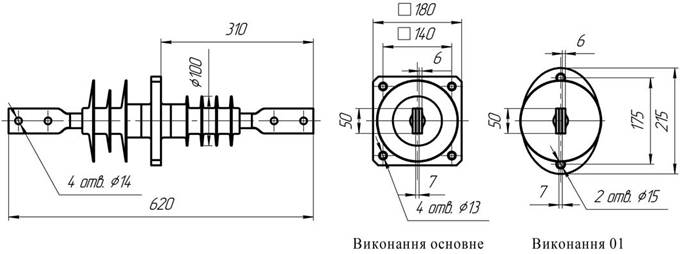
—
ППЦ-10/1000-12,5 УХЛ110 кВ, 1000 А
Изолятор проходной полимерный ППЦ-10/1000-12,5 УХЛ1, аналог керамического изолятора ИПУ-10/1000-12,5 УХЛ1, ИП-10/1000-12,5 У3, предназначен для ввода и изоляции токоведущих частей закрытых распределительных устройств электрических станций и подстанций (ТП), комплектных распределительных устройств (КТП), соединения с открытыми распределительными устройствами или линиями электропередачи на переменное напряжение 10 кВ частоты до 100 Гц, для работы в атмосфере типов I или II по ГОСТ 15150-69, а также для закрытых токопроводов.
Изолятор ППЦ-10/1000-12,5 УХЛ1 применяется для ремонта и комплектации трансформаторных подстанций КТП до 1000 кВа.
Варианты обозначения полимерных аналогов: ИППУ-10 1000-12,5 УХЛ1, ИППУ-10 1000-12,5-01 УХЛ1
Заменяют фарфоровый проходной изолятор: ИП-10 1000-12,5 У3, ИПУ-10 1000-12,5 УХЛ1, ИПУ-10 1000-1250 УХЛ1, ИПУ-10 1000-12,5 УХЛ 1, ИПУ10 1000-12,5 УХЛ1, ИПУ10 1000-12,50 УХЛ1, ИПУ-10 1000-12,5 УХЛ1
| Показатель | Ед. изм. | ППЦ-10/1000-12,5 УХЛ1 |
|---|---|---|
| Номинальное напряжение | кВ | 10 |
| Номинальный ток | А | 1000 |
| Нормированная разрушающая механическая сила при изгибе, не менее | кН | 12,5 |
| Выдерживаемое напряжение грозового импульса «1,2/50» | кВ | 80 |
| Выдерживаемое напряжение промышленной частоты в сухом состоянии | кВ | 45 |
| Выдерживаемое напряжение промышленной частоты под дождём | кВ | 30 |
| Выдерживаемое напряжение промышленной частоты в загрязнённом и увлажнённом состоянии при удельной поверхностной проводимости загрязнённого слоя (35±1,0) мкСм, не менее | кВ | 12 |
| Длина пути утечки внешней изоляции, не менее | мм | 380 |
| Длина пути утечки внутренней изоляции, не менее | мм | 290 |
| Масса, не более | кг | 4,9 |
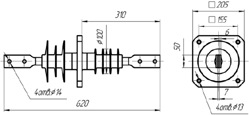
ППЦ-10/2000-12,5 УХЛ110 кВ, 2000 А
Изолятор проходной полимерный ППЦ-10/2000-12,5 УХЛ1, аналог керамического изолятора ИПУ-10/2000-12,5 УХЛ1, ИП-10/2000-12,5 У3, предназначен для ввода и изоляции токоведущих частей закрытых распределительных устройств электрических станций и подстанций (ТП), комплектных распределительных устройств (КТП), соединения с открытыми распределительными устройствами или линиями электропередачи на переменное напряжение 10 кВ частоты до 100 Гц, для работы в атмосфере типов I или II по ГОСТ 15150-69, а также для закрытых токопроводов.
Изолятор ППЦ-10/2000-12,5 УХЛ1 применяется для ремонта и комплектации трансформаторных подстанций КТП до 2000 кВа.
Варианты обозначения полимерных аналогов: ИПК 10 2000-IV IV УХЛ1, ИПК 10 2000-IV IV-М УХЛ1, ИПК 10 2000-IV IV УХЛ1, ИППУ-10 2000-12,5 УХЛ1, ИППУ-10 2000-12,5 УХЛ1
Заменяют фарфоровый проходной изолятор: ИПУ-10 2000-12,5 УХЛ 1, ИПУ-10 2000-12,50 УХЛ1, ИПУ-10 2000-1250 УХЛ1, ИПУ-10 2000-1250 УХЛ 1, ИП-10 2000-12,5 УХЛ1, ИПУ10 2000-12,5 УХЛ1, ИПУ10 2000-12,5УХЛ1, ПН-10-2000-1250 У1, ПНУ-10-2000-12,5 У1, ИП-10 2000-1250 У1, ПНБ-10 2000-1250 У1
| Показатель | Ед. изм. | ППЦ-10/2000-12,5 УХЛ1 |
|---|---|---|
| Номинальное напряжение | кВ | 10 |
| Номинальный ток | А | 2000 |
| Нормированная разрушающая механическая сила при изгибе, не менее | кН | 12,5 |
| Выдерживаемое напряжение грозового импульса «1,2/50» | кВ | 80 |
| Выдерживаемое напряжение промышленной частоты в сухом состоянии | кВ | 45 |
| Выдерживаемое напряжение промышленной частоты под дождём | кВ | 30 |
| Выдерживаемое напряжение промышленной частоты в загрязнённом и увлажнённом состоянии при удельной поверхностной проводимости загрязнённого слоя (35±1,0) мкСм, не менее | кВ | 12 |
| Длина пути утечки внешней изоляции, не менее | мм | 560 |
| Длина пути утечки внутренней изоляции, не менее | мм | 350 |
| Масса, не более | кг | 10,3 |

ППЦ-10/3150-12,5-01 УХЛ110 кВ, 3150 А
Изолятор проходной полимерный ППЦ-10/3150-12,5 УХЛ1, аналог керамического изолятора ИПУ-10/3150-12,5 УХЛ1, ИП-10/3150-12,5 У3, предназначен для ввода и изоляции токоведущих частей закрытых распределительных устройств электрических станций и подстанций (ТП), комплектных распределительных устройств (КТП), соединения с открытыми распределительными устройствами или линиями электропередачи на переменное напряжение 10 кВ частоты до 100 Гц, для работы в атмосфере типов I или II по ГОСТ 15150-69, а также для закрытых токопроводов.
Изолятор ППЦ-10/3150-12,5 УХЛ1 применяется для ремонта и комплектации трансформаторных подстанций КТП до 3150 кВа.
Варианты обозначения полимерных аналогов: ИПК 10 3150-IV IV УХЛ1, ИПК 10 3150-IV IV УХЛ1, ИПК 10 3150-IV IV УХЛ1, ИПК 10 3150-IV IV-М УХЛ1, ИПК 10 3150-IV IV-М УХЛ1, ИППУ-10 2000-12,5 УХЛ1, ИППУ-10 2000-12,5 УХЛ1
Заменяют фарфоровый проходной изолятор: ИПУ-10 3150-12,5 УХЛ1, ИПУ-10 3150-12.5 УХЛ1, ИПУ10 3150-12,5 УХЛ1, ИПУ10 3150-12,5УХЛ1, ПНБ-10 3150-1250 У1, ПНУ-10-3150-12 У1, ИП-10 3150-1250 У1
| Показатель | Ед. изм. | ППЦ-10/3150-12,5-01 УХЛ1 |
|---|---|---|
| Номинальное напряжение | кВ | 10 |
| Номинальный ток | А | 3150 |
| Нормированная разрушающая механическая сила при изгибе, не менее | кН | 12,5 |
| Выдерживаемое напряжение грозового импульса «1,2/50» | кВ | 80 |
| Выдерживаемое напряжение промышленной частоты в сухом состоянии | кВ | 45 |
| Выдерживаемое напряжение промышленной частоты под дождём | кВ | 30 |
| Выдерживаемое напряжение промышленной частоты в загрязнённом и увлажнённом состоянии при удельной поверхностной проводимости загрязнённого слоя (35±1,0) мкСм, не менее | кВ | 12 |
| Длина пути утечки внешней изоляции, не менее | мм | 580 |
| Длина пути утечки внутренней изоляции, не менее | мм | 370 |
| Материал шин и токопровода | — | Медь |
| Масса, не более | кг | 23,2 |
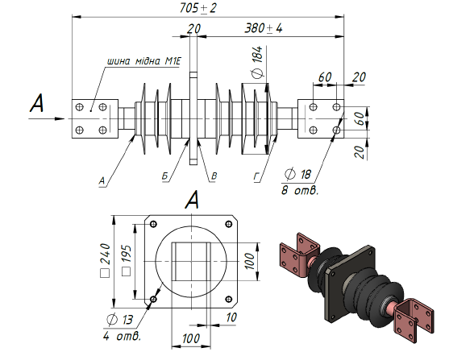
ИППУ-10/4000-30-А4 УХЛ110 кВ, 4000 А
Варианты обозначения полимерных аналогов: ИППС-10 3150-20 УХЛ1, ИППС-10 4000-20 УХЛ1. ИППУ-10 4000-12,5-А4 УХЛ 1 , ИПК 10 4000-IV IV УХЛ1 виконання 1, ИПК 10 4000-IV IV-М УХЛ1, ИПК 10 4000-IV IV-М УХЛ1 виконання 1, ИППУ-10 4000-30 УХЛ1, ИППУ-10 4000-30-01 УХЛ1, ИППУ-10 4000-30-А4 УХЛ1, ППЦ-10 4000-30 УХЛ1
Заменяют фарфоровый проходной изолятор: ИПУ-10 4000-30 УХЛ1, ИПУ-10 4000-30 УХЛ1, ИПУ10 4000-30 УХЛ1, ИПУ10 4000-30УХЛ1, ПНБ-10 4000-3000 У1, ПНУ-10-4000-30 У1, ИП-10 4000-30000 У1
| Показатель | Ед. изм. | ИППУ-10/4000-30-А4 УХЛ1 |
|---|---|---|
| Номинальное напряжение | кВ | 10 |
| Номинальный ток | А | 4000 |
| Нормированная разрушающая механическая сила при изгибе, не менее | кН | 12,5 |
| Выдерживаемое напряжение грозового импульса «1,2/50» | кВ | 80 |
| Выдерживаемое напряжение промышленной частоты в сухом состоянии | кВ | 45 |
| Выдерживаемое напряжение промышленной частоты под дождём | кВ | 30 |
| Выдерживаемое напряжение промышленной частоты в загрязнённом и увлажнённом состоянии при удельной поверхностной проводимости загрязнённого слоя (35±1,0) мкСм, не менее | кВ | 12 |
| Длина пути утечки внешней изоляции, не менее | мм | 680 |
| Длина пути утечки внутренней изоляции, не менее | мм | 660 |
| Толщина преграды (указывается при заказе) | мм | H |
| Материал шин и токопровода | — | Медь |
| Масса, не более | кг | 34,5 |
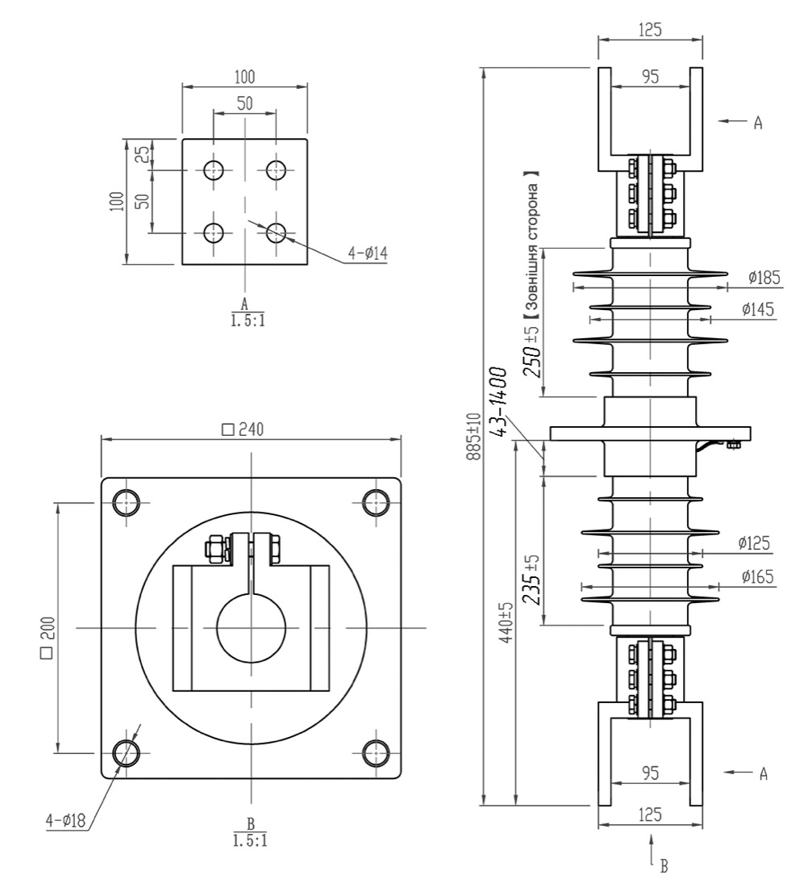
ППЦ-10/4000-30 УХЛ110 кВ, 4000 А
Изолятор проходной полимерный ППЦ-10/4000-30 УХЛ1, аналог керамического изолятора ИПУ-10/4000-30 УХЛ1, ИП-10/4000-30 У3, предназначен для ввода и изоляции токоведущих частей закрытых распределительных устройств электрических станций и подстанций (ТП), комплектных распределительных устройств (КТП), соединения с открытыми распределительными устройствами или линиями электропередачи на переменное напряжение 10 кВ частоты до 100 Гц, для работы в атмосфере типов I или II по ГОСТ 15150-69, а также для закрытых токопроводов.
Изолятор ППЦ-10/4000-30 УХЛ1 применяется для ремонта и комплектации трансформаторных подстанций КТП до 4000 кВа.
Варианты обозначения полимерных аналогов: ИПК 10 4000-IV IV УХЛ1 исполнение 1, ИПК 10 4000-IV IV-М УХЛ1, ИПК 10 4000-IV IV-М УХЛ1 исполнение 1, ИППУ-10 4000-30 УХЛ1, ИППУ-10 4000-30-01 УХЛ1, ИППУ-10 4000-30-А4 УХЛ1
Заменяют фарфоровый проходной изолятор: ИПУ-10 4000-30 УХЛ1, ИПУ-10 4000-30 УХЛ1, ИПУ10 4000-30 УХЛ1, ИПУ10 4000-30УХЛ1, ПНБ-10 4000-3000 У1, ПНУ-10-4000-30 У1, ИП-10 4000-30000 У1
| Показатель | Ед. изм. | ППЦ-10/4000-30 УХЛ1 |
|---|---|---|
| Номинальное напряжение | кВ | 10 |
| Номинальный ток | А | 4000 |
| Нормированная разрушающая механическая сила при изгибе, не менее | кН | 30 |
| Выдерживаемое напряжение грозового импульса «1,2/50» | кВ | 80 |
| Выдерживаемое напряжение промышленной частоты в сухом состоянии | кВ | 45 |
| Выдерживаемое напряжение промышленной частоты под дождём | кВ | 30 |
| Выдерживаемое напряжение промышленной частоты в загрязнённом и увлажнённом состоянии при удельной поверхностной проводимости загрязнённого слоя (35±1,0) мкСм, не менее | кВ | 12 |
| Длина пути утечки внешней изоляции, не менее | мм | 800 |
| Длина пути утечки внутренней изоляции, не менее | мм | 800 |
| Материал шин и токопровода | — | Медь |
| Масса, не более | кг | 34,5 |
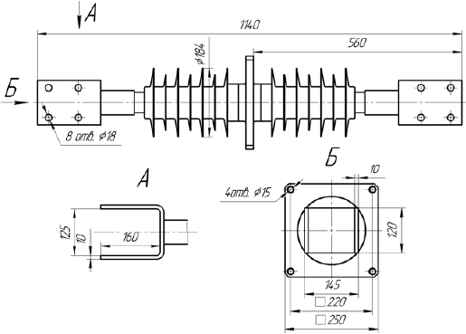
ППЦ-20/2000-12,5 УХЛ120 кВ, 2000 А
Изолятор проходной полимерный ППЦ-20/2000-12,5 УХЛ1, аналог керамического изолятора ИПУ-20/2000-12,5 УХЛ1, ИП-20/2000-12,5 У3, предназначен для ввода и изоляции токоведущих частей закрытых распределительных устройств электрических станций и подстанций (ТП), комплектных распределительных устройств (КТП), соединения с открытыми распределительными устройствами или линиями электропередачи на переменное напряжение 20 кВ частоты до 100 Гц, для работы в атмосфере типов I или II по ГОСТ 15150-69, а также для закрытых токопроводов.
Изолятор ППЦ-20/2000-12,5 УХЛ1 применяется для ремонта и комплектации трансформаторных подстанций КТП до 2000 кВа.
Варианты обозначения полимерных аналогов: ИПК 20 2000-IV IV УХЛ1, ИПК 20 2000-IV IV-М УХЛ1, ИПК 20 2000-IV IV УХЛ1, ИППУ-20 2000-12,5 УХЛ1, ИППУ-20 2000-12,5 УХЛ1
Заменяют фарфоровый проходной изолятор: ИП-20 2000-12,5 УХЛ1, ИП-20 2000-12.5 УХЛ1, ИП20 2000-12,5УХЛ1, ПН-20-2000-1250 У1, ПН-20-2000-12,5 У1, ИП-20 2000-1250 У1
| Показатель | Ед. изм. | ППЦ-20/2000-12,5 УХЛ1 |
|---|---|---|
| Номинальное напряжение | кВ | 20 |
| Номинальный ток | А | 2000 |
| Нормированная разрушающая механическая сила при изгибе, не менее | кН | 12,5 |
| Выдерживаемое напряжение грозового импульса «1,2/50» | кВ | 125 |
| Выдерживаемое напряжение промышленной частоты в сухом состоянии | кВ | 65 |
| Выдерживаемое напряжение промышленной частоты под дождём | кВ | 50 |
| Выдерживаемое напряжение промышленной частоты в загрязнённом и увлажнённом состоянии при удельной поверхностной проводимости загрязнённого слоя (35±1,0) мкСм, не менее | кВ | 26 |
| Длина пути утечки внешней изоляции, не менее | мм | 800 |
| Длина пути утечки внутренней изоляции, не менее | мм | 800 |
| Масса, не более | кг | 21,5 |

—
ИППУ-20/3150-12,5 УХЛ120 кВ, 3150 А
Проходной изолятор ИППУ-20/3150-12,5 УХЛ1 аналог керамического изолятора ИП-20/3150-12,5 УХЛ1, ИП-20/3150-20 УХЛ1, ИП-20/3150-30 УХЛ1, предназначен для ввода и изоляции токоведущих частей закрытых распределительных устройств электрических станций и подстанций (ТП), комплектных распределительных устройств (КТП), соединения с открытыми распределительными устройствами или линиями электропередачи на переменное напряжение 30 кВ частоты до 100 Гц, для работы в атмосфере типов I или II, а также для закрытых токопроводов.
Варианты обозначения полимерных аналогов: ИП-20 3150-12,5 УХЛ1, ИПУ-20 3150-12,5 УХЛ, ИППУ-20 3150-12,5 УХЛ1, ІППУ-20 3150-12,5-01, ППЦ-20 3150-12,5 УХЛ1, ППЦ-20 3150-12,5-01 УХЛ1, ІППУ-20 3150-20 УХЛ1, ІППУ-20 3150-20-01 УХЛ1, ІП-20 3150-20 УХЛ1
| Показатель | Ед. изм. | ИППУ-20/3150-12,5 УХЛ1 |
|---|---|---|
| Класс напряжения сети | кВ | 20 |
| Номинальное напряжение | кВ | 24 |
| Нормированная разрушающая механическая сила при изгибе, не менее | кН | 8, 12,5, 20 |
| Выдерживаемое напряжение грозового импульса «1,2/50» | кВ | 125 |
| Выдерживаемое напряжение промышленной частоты в сухом состоянии | кВ | 50 |
| Пропускная способность | А | 3150 |
| Длина пути утечки внешней/внутренней изоляции, не менее | мм | 750/570 |
| Высота установки над уровнем моря, не более | м | 1000 |
| Масса, не более | кг | зависит от конфигурации |
| Район по степени загрязнённости атмосферы (СЗА) | — | IV |
| Код УКТ ВЭД | — | 8546 |
H стандартно 43 мм. по требованию заказчика данный размер может быть увеличен до 1400мм.
* зависит от Н

—
ППЦ-20/4000-12,5 УХЛ120 кВ, 4000 А
Изолятор проходной полимерный ППЦ-20/4000-12,5 УХЛ1, аналог керамического изолятора ИПУ-20/3150-12,5 УХЛ1, ИП-20/3150-12,5 У3, ИПУ-20/4000-12,5 УХЛ1, ИП-20/4000 У3, предназначен для ввода и изоляции токоведущих частей закрытых распределительных устройств электрических станций и подстанций (ТП), комплектных распределительных устройств (КТП), соединения с открытыми распределительными устройствами или линиями электропередачи на переменное напряжение 20 кВ частоты до 100 Гц, для работы в атмосфере типов I или II по ГОСТ 15150-69, а также для закрытых токопроводов.
Изолятор ППЦ-20/4000-12,5 УХЛ1 применяется для ремонта и комплектации трансформаторных подстанций КТП до 4000 кВа.
Варианты обозначения полимерных аналогов: ИПК 20 3150-IV IV УХЛ1, ИПК 20 3150-IV IV УХЛ1, ИПК 20 3150-IV IV УХЛ1, ИПК 20 3150-IV IV-М УХЛ1, ИПК 20 3150-IV IV-М УХЛ1, ИППУ-20 3150-12,5 УХЛ1, ИППУ-20 3150-12,5 УХЛ1, ИПК 20 4000-IV IV УХЛ1, ИПК 20 4000-IV IV УХЛ1, ИПК 20 4000-IV IV УХЛ1, ИПК 20 4000-IV IV-М УХЛ1, ИПК 20 4000-IV IV-М УХЛ1, ИППУ-20 4000-12,5 УХЛ1, ИППУ-20 4000-12,5 УХЛ1
Заменяют фарфоровый проходной изолятор: ИП-20 3150-12.5 УХЛ1, ПН-20-3150-1250 У1, ПН-20-3150-12,5 У1, ИП-20 3150-1250 У1, ИП20 3150-12,5УХЛ1, ИП-20 3150-12,5 УХЛ1, П-20 3150-12,5 УХЛ 1, ИП-20 3150-12,50 УХЛ 1, ИП-20 3150-1250 УХЛ 1, ИП20 3150-12,5 УХЛ1, ИПУ-20 3150-12,5 УХЛ1, ИП-20 4000-12.5 УХЛ1, ПН-20-4000-1250 У1, ПН-20-4000-12,5 У1, ИП-20 4000-1250 У1, ИП20 4000-12,5УХЛ1, ИП-20 4000-12,5 УХЛ1, П-20 4000-12,5 УХЛ 1, ИП-20 4000-12,50 УХЛ 1, ИП-20 4000-1250 УХЛ 1, ИП20 4000-12,5 УХЛ1, ИПУ-20 4000-12,5 УХЛ1
| Показатель | Ед. изм. | ППЦ-20/4000-12,5 УХЛ1 |
|---|---|---|
| Номинальное напряжение | кВ | 20 |
| Номинальный ток | А | 4000 |
| Нормированная разрушающая механическая сила при изгибе, не менее | кН | 12,5 |
| Выдерживаемое напряжение грозового импульса «1,2/50» | кВ | 125 |
| Выдерживаемое напряжение промышленной частоты в сухом состоянии | кВ | 65 |
| Выдерживаемое напряжение промышленной частоты под дождём | кВ | 50 |
| Выдерживаемое напряжение промышленной частоты в загрязнённом и увлажнённом состоянии при удельной поверхностной проводимости загрязнённого слоя (35±1,0) мкСм, не менее | кВ | 26 |
| Длина пути утечки внешней изоляции, не менее | мм | 800 |
| Длина пути утечки внутренней изоляции, не менее | мм | 800 |
| Материал шин и токопровода | — | Медь |
| Масса, не более | кг | 34,5 |
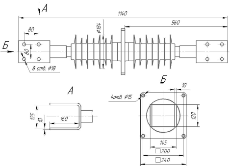
ППЦ-35/630-8 УХЛ135 кВ, 630 А
Изолятор проходной полимерный ППЦ-35/630-8 УХЛ1, аналог керамического изолятора ИПУ-35/630-7,5 УХЛ1, ИПУ 35/630-7,5-I УХЛ1, предназначен для ввода и изоляции токоведущих частей закрытых распределительных устройств электрических станций и подстанций (ТП), комплектных распределительных устройств (КТП), соединения с открытыми распределительными устройствами или линиями электропередачи на переменное напряжение 35 кВ частоты до 100 Гц, для работы в атмосфере типов I или II по ГОСТ 15150-69, а также для закрытых токопроводов.
Изолятор ППЦ 35/630-8 УХЛ1 применяется для ремонта и комплектации трансформаторных подстанций КТП мощностью до 100, 160, 200, 300, 400, 630 кВа.
Варианты обозначения полимерных аналогов: ИППУ-35 630-8 УХЛ1, ИППУ-35 630-8-01 УХЛ1, ИППУ-35 630-8-02 УХЛ1
Заменяют фарфоровый проходной изолятор: ИП-35 630-7,5 УХЛ1, ИП-35 630-7,50 УХЛ1, ИП-35 630-750 УХЛ1, ИП-35 630-7,5 УХЛ 1, ИП35 630-7,5 УХЛ1, ИПУ-35 630-7,5 УХЛ1, ИП-35 400-7,5 УХЛ1, ИП-35 400-7,50 УХЛ1, ИП-35 400-750 УХЛ1, ИП-35 400-7,5 УХЛ 1, ИП35 400-7,5 УХЛ1, ИПУ-35 400-7,5 УХЛ1, ИП35 400-7,5УХЛ2, ИП-35 400-7,5 УХЛ2
| Показатель | Ед. изм. | ППЦ-35/630-8 УХЛ1 |
|---|---|---|
| Номинальное напряжение | кВ | 35 |
| Номинальный ток | А | 630 |
| Нормированная разрушающая механическая сила при изгибе, не менее | кН | 8 |
| Выдерживаемое напряжение грозового импульса «1,2/50» | кВ | 190 |
| Выдерживаемое напряжение промышленной частоты в сухом состоянии | кВ | 95 |
| Выдерживаемое напряжение промышленной частоты под дождём | кВ | 80 |
| Выдерживаемое напряжение промышленной частоты в загрязнённом и увлажнённом состоянии при удельной поверхностной проводимости загрязнённого слоя (35±1,0) мкСм, не менее | кВ | 42 |
| Длина пути утечки внешней изоляции, не менее | мм | 1200 |
| Длина пути утечки внутренней изоляции, не менее | мм | 1000 |
| Масса, не более | кг | 14,8 |
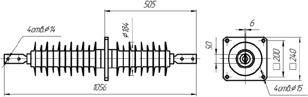
ППЦ-35/1000-8 УХЛ135 кВ, 1000 А
Изолятор проходной полимерный ППЦ-35/1000-8 УХЛ1, аналог керамического изолятора ИПУ-35/1000-7,5 УХЛ1, ИПУ 35/1000-7,5-I УХЛ1, предназначен для ввода и изоляции токоведущих частей закрытых распределительных устройств электрических станций и подстанций (ТП), комплектных распределительных устройств (КТП), соединения с открытыми распределительными устройствами или линиями электропередачи на переменное напряжение 35 кВ частоты до 100 Гц, для работы в атмосфере типов I или II по ГОСТ 15150-69, а также для закрытых токопроводов.
Изолятор ППЦ 35/1000-8 УХЛ1 применяется для ремонта и комплектации трансформаторных подстанций КТП мощностью до 1000 кВа.
Варианты обозначения полимерных аналогов: ИППУ-35 1000-8 УХЛ1, ИППУ-35 1000-8-01 УХЛ1, ИППУ-35 1000-8-02 УХЛ1
Заменяют фарфоровый проходной изолятор: ИП-35 1000-7,5 УХЛ1, ИП-35 1000-7,50 УХЛ1, ИП-35 1000-750 УХЛ1, ИП-35 1000-7,5 УХЛ 1, ИП35 1000-7,5 УХЛ1, ИПУ-35 1000-7,5 УХЛ1, ИП-35 1000-7,5 УХЛ1, ИП-35 1000-7,50 УХЛ1, ИП-35 1000-750 УХЛ1, ИП-35 1000-7,5 УХЛ 1, ИП35 1000-7,5 УХЛ1, ИПУ-35 1000-7,5 УХЛ1, ИП35 1000-7,5УХЛ2, ИП-35 1000-7,5 УХЛ2
| Показатель | Ед. изм. | ППЦ-35/1000-8 УХЛ1 |
|---|---|---|
| Номинальное напряжение | кВ | 35 |
| Номинальный ток | А | 1000 |
| Нормированная разрушающая механическая сила при изгибе, не менее | кН | 8 |
| Выдерживаемое напряжение грозового импульса «1,2/50» | кВ | 190 |
| Выдерживаемое напряжение промышленной частоты в сухом состоянии | кВ | 95 |
| Выдерживаемое напряжение промышленной частоты под дождём | кВ | 80 |
| Выдерживаемое напряжение промышленной частоты в загрязнённом и увлажнённом состоянии при удельной поверхностной проводимости загрязнённого слоя (35±1,0) мкСм, не менее | кВ | 42 |
| Длина пути утечки внешней изоляции, не менее | мм | 1200 |
| Длина пути утечки внутренней изоляции, не менее | мм | 1000 |
| Масса, не более | кг | 14,8 |
ППЦ-35/1600-8 УХЛ135 кВ, 1600 А
Изолятор проходной полимерный ППЦ-35/1600-8 УХЛ1, аналог керамического изолятора ИПУ-35/1600-7,5 УХЛ1, ИПУ 35/1600-7,5-I УХЛ1, предназначен для ввода и изоляции токоведущих частей закрытых распределительных устройств электрических станций и подстанций (ТП), комплектных распределительных устройств (КТП), соединения с открытыми распределительными устройствами или линиями электропередачи на переменное напряжение 35 кВ частоты до 100 Гц, для работы в атмосфере типов I или II по ГОСТ 15150-69, а также для закрытых токопроводов.
Изолятор ППЦ 35/1600-8 УХЛ1 применяется для ремонта и комплектации трансформаторных подстанций КТП мощностью до 1600 кВа.
Варианты обозначения полимерных аналогов: ИППУ-35 1600-8 УХЛ1, ИППУ-35 1600-8-01 УХЛ1, ИППУ-35 1600-8-02 УХЛ1
Заменяют фарфоровый проходной изолятор: ИП-35 1600-7,5 УХЛ1, ИП-35 1600-7,50 УХЛ1, ИП-35 1600-750 УХЛ1, ИП-35 1600-7,5 УХЛ 1, ИП35 1600-7,5 УХЛ1, ИПУ-35 1600-7,5 УХЛ1, ИП-35 1600-7,5 УХЛ1, ИП-35 1600-7,50 УХЛ1, ИП-35 1600-750 УХЛ1, ИП-35 1600-7,5 УХЛ 1, ИП35 1600-7,5 УХЛ1, ИПУ-35 1600-7,5 УХЛ1, ИП35 1600-7,5УХЛ2, ИП-35 1600-7,5 УХЛ2
| Показатель | Ед. изм. | ППЦ-35/1600-8 УХЛ1 |
|---|---|---|
| Номинальное напряжение | кВ | 35 |
| Номинальный ток | А | 1600 |
| Нормированная разрушающая механическая сила при изгибе, не менее | кН | 8 |
| Выдерживаемое напряжение грозового импульса «1,2/50» | кВ | 190 |
| Выдерживаемое напряжение промышленной частоты в сухом состоянии | кВ | 95 |
| Выдерживаемое напряжение промышленной частоты под дождём | кВ | 80 |
| Выдерживаемое напряжение промышленной частоты в загрязнённом и увлажнённом состоянии при удельной поверхностной проводимости загрязнённого слоя (35±1,0) мкСм, не менее | кВ | 42 |
| Длина пути утечки внешней изоляции, не менее | мм | 1200 |
| Длина пути утечки внутренней изоляции, не менее | мм | 1000 |
| Масса, не более | кг | 14,8 |
ИППУ-35/3150-30 УХЛ135 кВ, 3150 А
Проходной изолятор ИППУ-35/3150-30 УХЛ1 аналог керамического изолятора ИП-35/3150-12,5 УХЛ1, ИП-35/3150-20 УХЛ1, ИП-35/3150-30 УХЛ1, предназначен для ввода и изоляции токоведущих частей закрытых распределительных устройств электрических станций и подстанций (ТП), комплектных распределительных устройств (КТП), соединения с открытыми распределительными устройствами или линиями электропередачи на переменное напряжение 30 кВ частоты до 100 Гц, для работы в атмосфере типов I или II, а также для закрытых токопроводов.
Варианты обозначения полимерных аналогов: ИППС-35 3150-20 УХЛ1, ИП-35 3150-12,5 УХЛ1, ИПУ-35 3150-7,5 УХЛ, ИППУ-35 3150-12,5 УХЛ1, ИППУ-35 3150-20 УХЛ1, ППЦ-35 3150-12,5 УХЛ1, ІППУ-35 3150-20 УХЛ1, ППЦ-35 3150-20 УХЛ1, ІП-35 3150-20 УХЛ1
| Показатель | Ед. изм. | ИППУ-35/3150-30 УХЛ1 |
|---|---|---|
| Класс напряжения сети | кВ | 35 |
| Номинальное напряжение | кВ | 40,5 |
| Нормированная разрушающая механическая сила при изгибе, не менее | кН | 8, 12,5, 20, 30 |
| Выдерживаемое напряжение грозового импульса «1,2/50» | кВ | 200 |
| Выдерживаемое напряжение промышленной частоты в сухом состоянии | кВ | 95 |
| Пропускная способность | А | 3150 |
| Длина пути утечки внешней/внутренней изоляции, не менее | мм | 1260/810 |
| Необходимая длина проходной части H | мм | 10-1600 |
| Масса, не более | кг | зависит от конфигурации |
| Район по степени загрязнённости атмосферы (СЗА) | — | IV |
| Код УКТ ВЭД | — | 8546 |
По требованию заказчика имеется возможность изменения присоединительных размеров.
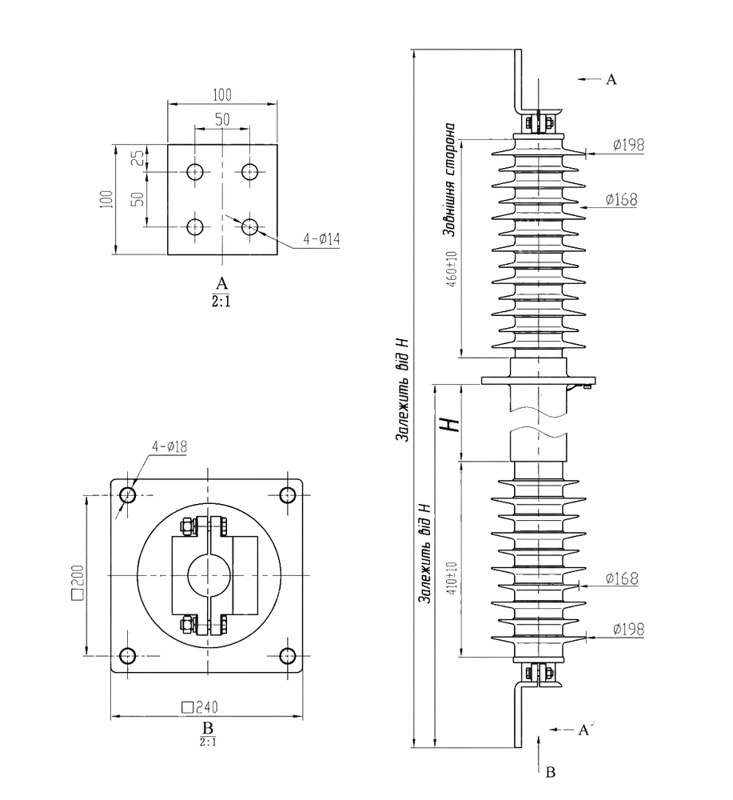
—
ИППУ-35/4000-30 УХЛ135 кВ, 4000 А
Проходной изолятор ИППУ-35/4000-30 УХЛ1 аналог керамического изолятора ИП-35/4000-12,5 УХЛ1, ИП-35/4000-20 УХЛ1, ИП-35/4000-30 УХЛ1, предназначен для ввода и изоляции токоведущих частей закрытых распределительных устройств электрических станций и подстанций (ТП), комплектных распределительных устройств (КТП), соединения с открытыми распределительными устройствами или линиями электропередачи на переменное напряжение 30 кВ частоты до 100 Гц, для работы в атмосфере типов I или II, а также для закрытых токопроводов.
Варианты обозначения полимерных аналогов: ИППС-10 4000-20 УХЛ1, ИП-35 4000-7,5 УХЛ1, ИПУ-35 4000-7,5 УХЛ, ИППУ-35 4000-12,5 УХЛ1, ИППУ-35 4000-20 УХЛ1, ППЦ-35 4000-12,5 УХЛ1, ППЦ-35 4000-20 УХЛ1
| Показатель | Ед. изм. | ИППУ-35/4000-30 УХЛ1 |
|---|---|---|
| Класс напряжения сети | кВ | 35 |
| Номинальное напряжение | кВ | 40,5 |
| Нормированная разрушающая механическая сила при изгибе, не менее | кН | 8, 12,5, 20, 30 |
| Выдерживаемое напряжение грозового импульса «1,2/50» | кВ | 200 |
| Выдерживаемое напряжение промышленной частоты в сухом состоянии | кВ | 95 |
| Пропускная способность | А | 4000 |
| Длина пути утечки внешней/внутренней изоляции, не менее | мм | 1260/810 |
| Необходимая длина проходной части H | мм | 10-1600 |
| Масса, не более | кг | зависит от конфигурации |
| Район по степени загрязнённости атмосферы (СЗА) | — | IV |
| Код УКТ ВЭД | — | 8546 |
По требованию заказчика имеется возможность изменения присоединительных размеров.
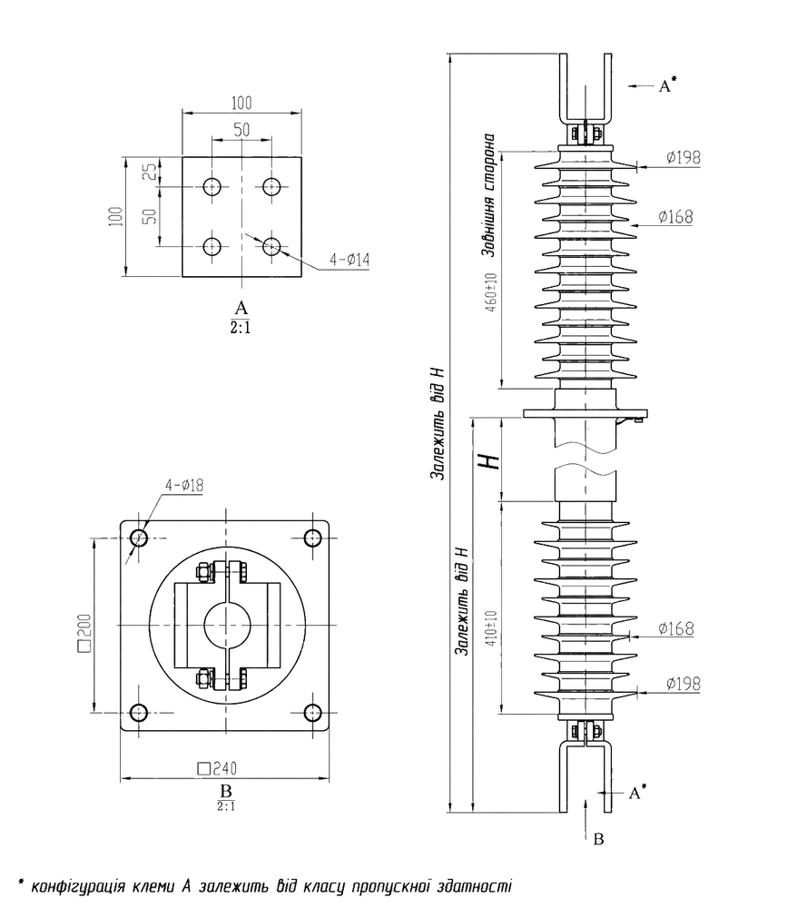
—
Линейные вводы 110 кВ110 кВ, 800-2000 А, воздух-воздух, FCRGW-110-800-2000
Варианты обозначения полимерных аналогов: FCRG–126 2000, FCRG–126 1000, FCRG–126 1250, FCRG–126 800, FCRG–123 2000, FCRG–123 1000, FCRG–123 1250, FCRG–123 800, FCRG1–126 2000, FCRG1–126 1000, FCRG1–126 1250, FCRG1–126 800, FCRG1–123 2000, FCRG1–123 1000, FCRG1–123 1250, FCRG1–123 800,
| Показатель | Ед. изм. | Линейные вводы 110 кВ |
|---|---|---|
| Класс напряжения сети | кВ | 110 |
| Номинальное напряжение | кВ | 123 |
| Нормированная разрушающая механическая сила при изгибе, не менее | кН | 4 |
| Выдерживаемое напряжение грозового импульса «1,2/50» | кВ | 550 |
| Выдерживаемое напряжение промышленной частоты в сухом состоянии | кВ | 230 |
| Пропускная способность | А | 630-2000 |
| Длина пути утечки внешней/внутренней изоляции, не менее | мм | 4500/4500 |
| Изоляционное расстояние внешней/внутренней изоляции, не менее | мм | 1215/1215 |
| Тангенс угла диэлектрических потерь | % | >0,7 % |
| Угол установки | ° | 0–90° |
| Необходимая длина проходной части H | мм | 10-1600 |
| Стандарт | — | GB/T 4108-2008, IEC 60137 |
| Масса, не более | кг | зависит от конфигурации |
| Район по степени загрязнённости атмосферы (СЗА) | — | IV |
| Код УКТ ВЭД | — | 8546 |
По требованию заказчика имеется возможность изменения присоединительных размеров.
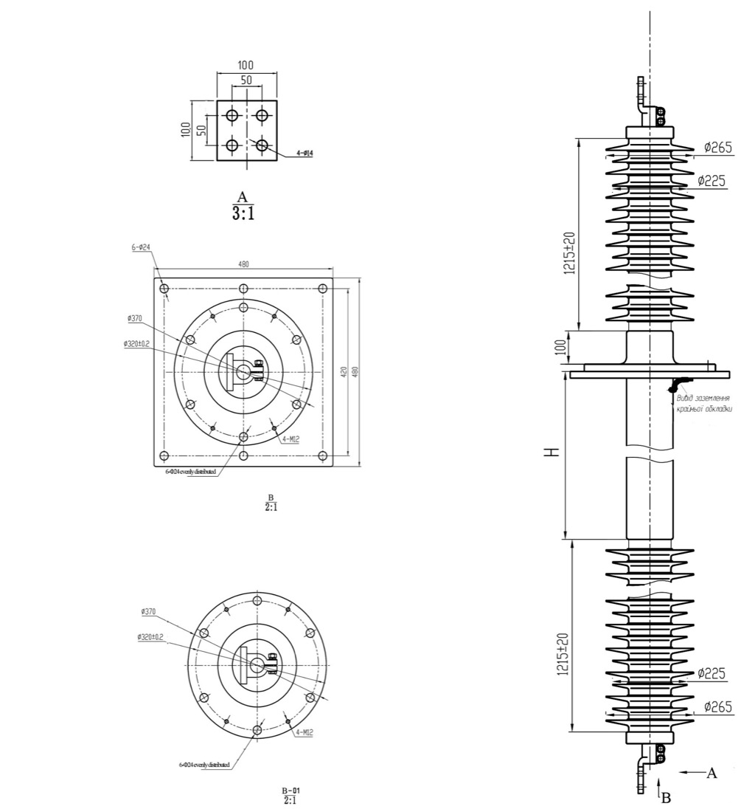
—
Нужен подбор изолятора?
Подберём проходной изолятор вместо фарфорового. Доставка по Украине любым удобным перевозчиком.